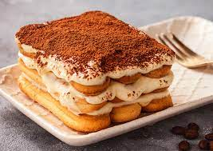

Tiramisu

EL tiramisu son capas de bizcochos de soletilla empapados en café, rica crema de mascarpone y una capa de cacao en polvo.
Ingredientes
- 500 g. de queso-crema Mascarpone
- 6 huevos
- 150 g. de azúcar
- 300 g. de bizcochos savoiardi o de soletilla
- 4 cucharadas de Amaretto
- 10 a 20 g. de cacao puro en polvo
- 150 ml. de café fuerte
- 1 pellizco de sal para montar las claras
Receta
- Calentamos agua en una cazuela grande, debe estar caliente pero sin llegar a hervir. Mientras se calienta el agua vamos separando las yemas de las claras y apartamos en una taza. Las claras las vamos a montar posteriormente, reservamos.
- Los huevos deben ser frescos y hay que manipularlos a temperatura ambiente. Mezclamos el azúcar, en un cuenco metálico, con todas las yemas. Empezamos batiendo en el cuenco fuera del agua y cuando comience a espumar introducimos el cuenco en la cazuela con el agua caliente.
- Una vez dentro batimos con unas varillas manualmente o con las de la batidora hasta que las yemas doblen de tamaño. Vamos añadiendo poco a poco las cuatro cucharadas de amaretto y mezclando de manera envolvente hasta que estén incorporadas a la crema. Después de mezclar todo sacamos del baño maría y seguimos en frío hasta que nos quede una crema esponjosa y compacta. Reservamos para el montaje del tiramisú.
- Montamos las claras a punto de nieve. Para ello introducimos las claras, a temperatura ambiente, en un bol en el que no haya ningún resto de grasa o no subirán. Les añadimos un pellizco de sal y empezamos a batir. Batimos hasta que las claras suban y queden firmes. Luego manejamos el merengue con una espátula de silicona.
- Añadimos la crema sabayón que tenemos reservada a las claras montadas. Mezclamos de manera envolvente y con cuidado hasta que quede todo integrado e intentando que bajen lo mínimo posible.
- Batimos el queso mascarpone hasta que quede cremoso (lo mejor es batirlo a temperatura ambiente). Mezclamos este queso batido con la crema anterior suavemente, intentando que no se baje la crema para mantenerla esponjosa. Reservamos.
- Ponemos una cafetera con un buen café, el que más nos guste. Una vez preparado lo dejaremos enfriar.
- En el molde elegido, ponemos una capa de bizcochos de soletilla. Regamos con el café para empapar los bizcochos. No debemos mojarlos demasiado, lo justo para asustarlos, no deben romperse.
- Cubrimos con una capa de crema de queso y huevo y repetimos la operación hasta tener una o dos capas más, bizcochos mojados y capa de crema. El último paso es el del toque del cacao, imprescindible que sea cacao de calidad y amargo. Este ingrediente es el que da ese contraste tan importante en este postre.
- Lo espolvoreamos sobre el postre con un colador para que no queden grumillos. Yo suelo dejar este paso para el final de todo. Justo antes de presentarlo a los invitados, porque al enfriar el cacao tiene peor presentación. Y lo fundamental, metedlo a la nevera para que enfríe. Yo lo dejo siempre de un día para otro.